Recorridos · Prologo_UltimaNoche
Cada personaje con su color; un punto cada 2 s (con el segundo cada 10 s); los conos son las cámaras con su número de plano.
1. @inicio · 0:00,0 – 0:13,1
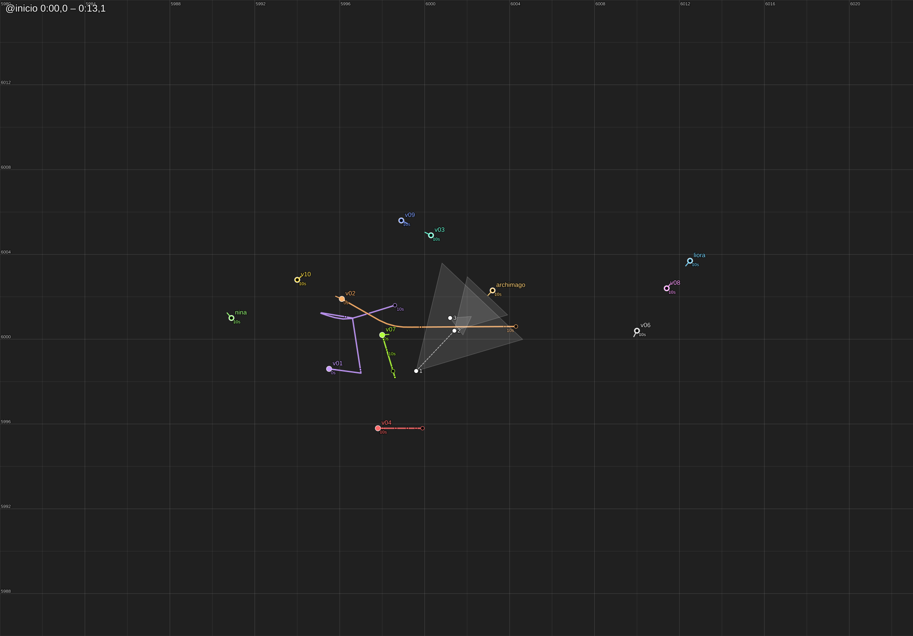
2. @saludo_fin · 0:13,1 – 0:40,4
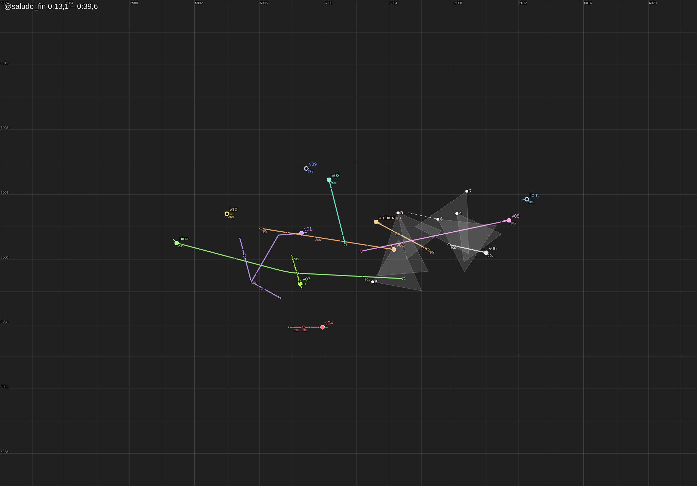
3. @globo_sube · 0:40,4 – 0:50,6
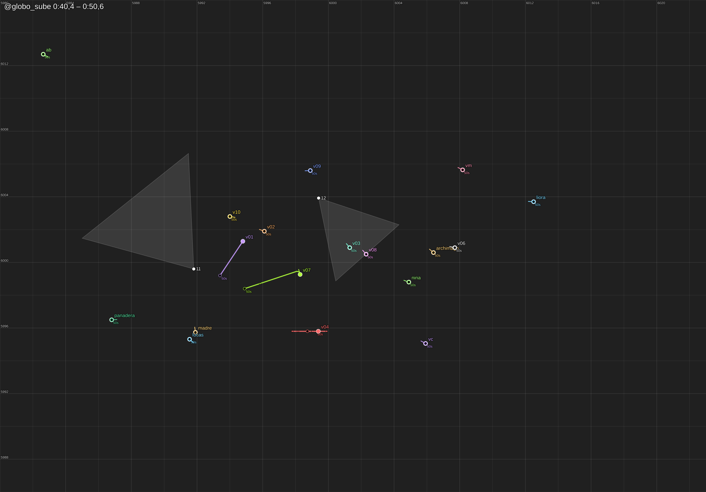
4. @globo_fin · 0:50,6 – 1:12,4
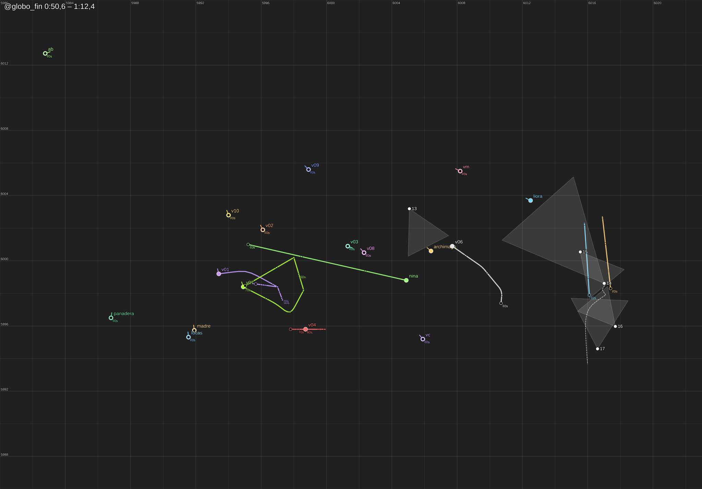
5. @cielo · 1:12,4 – 1:29,1
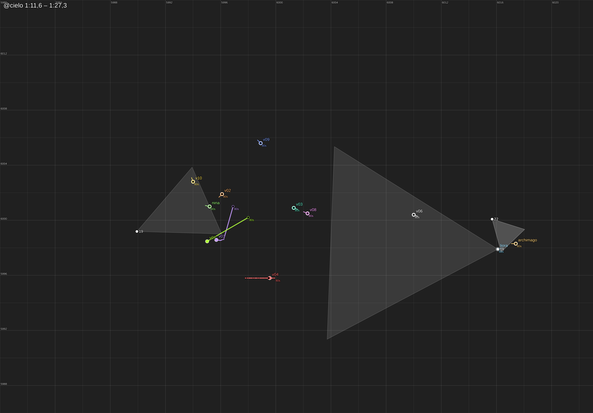
6. @evacuar · 1:29,1 – 1:55,5
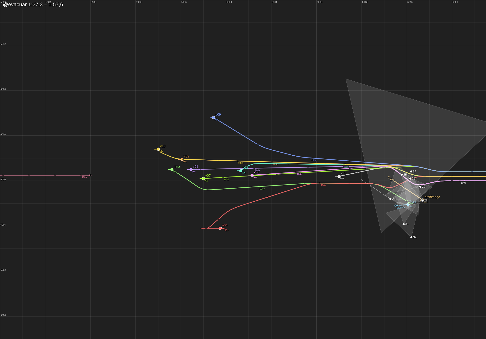
7. @vamos · 1:55,5 – 2:10,5
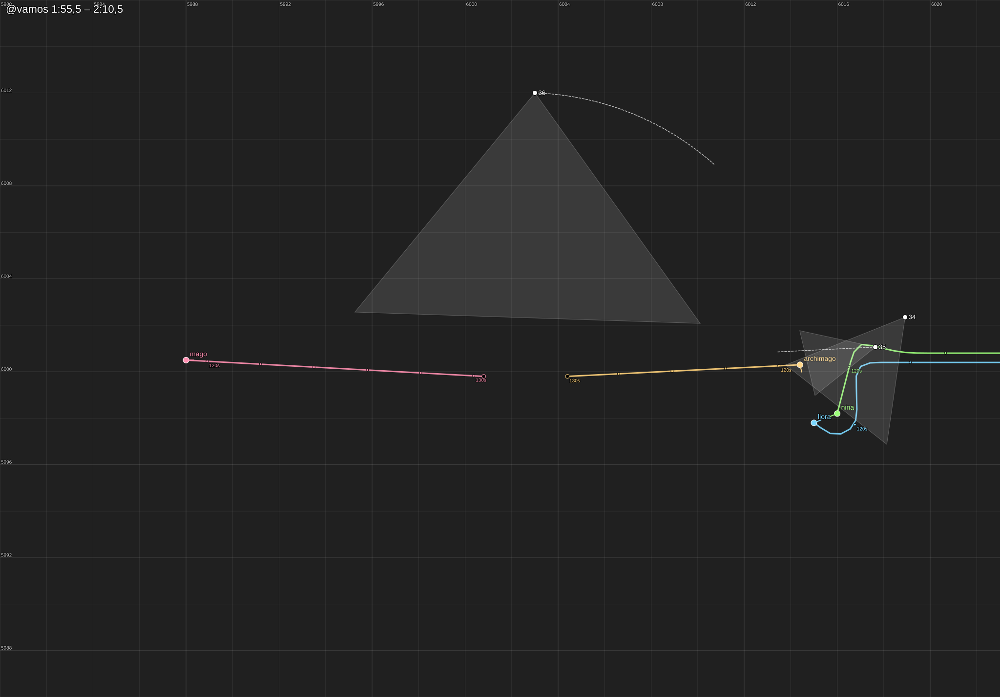
8. @duelo · 2:10,5 – 2:24,7
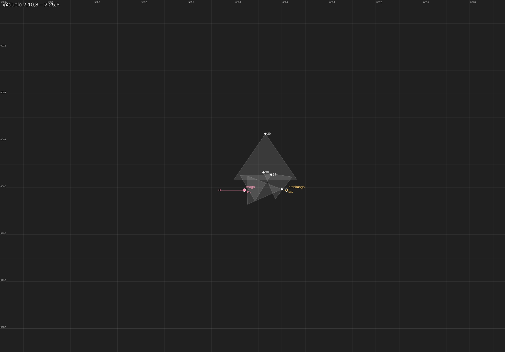
9. @intercambio · 2:24,7 – 2:35,0
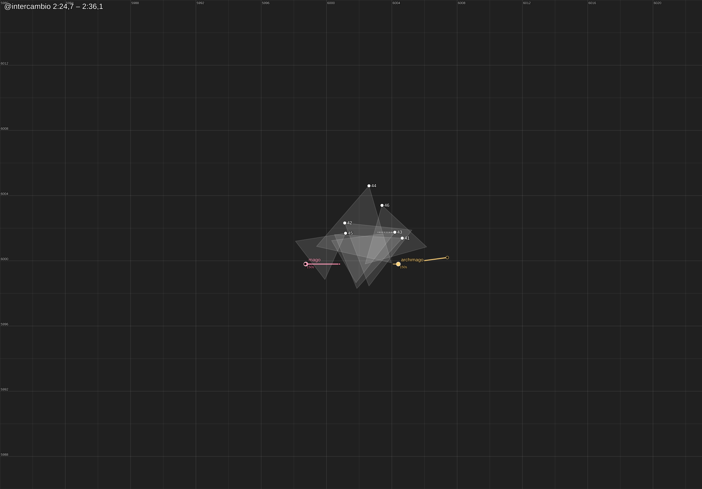
10. @ultimo · 2:35,0 – 3:26,4
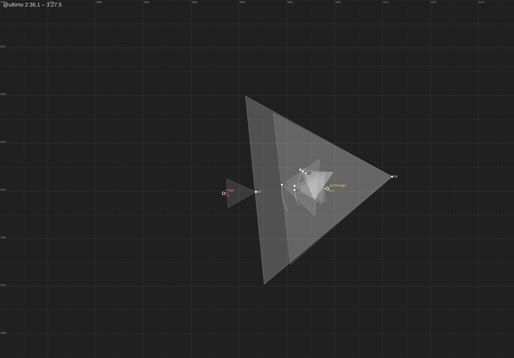
11. @hechizo · 3:26,4 – 3:38,9
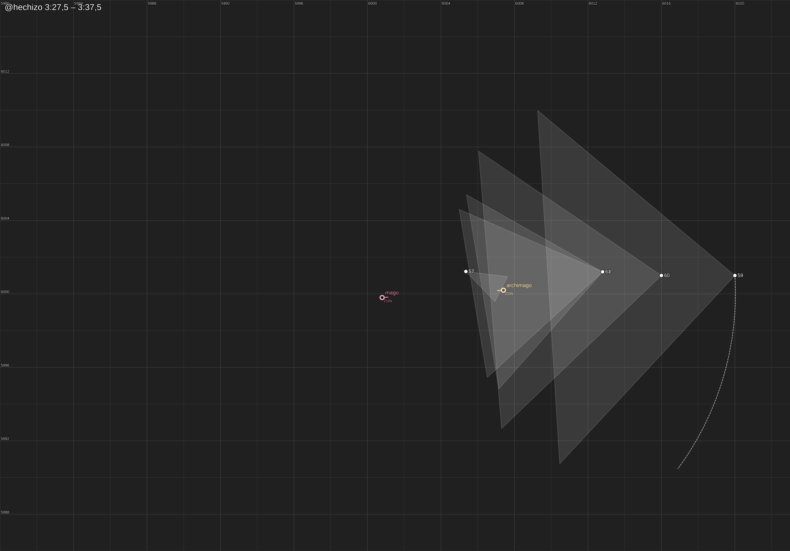